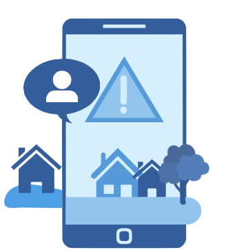
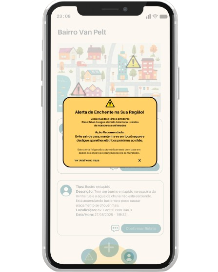
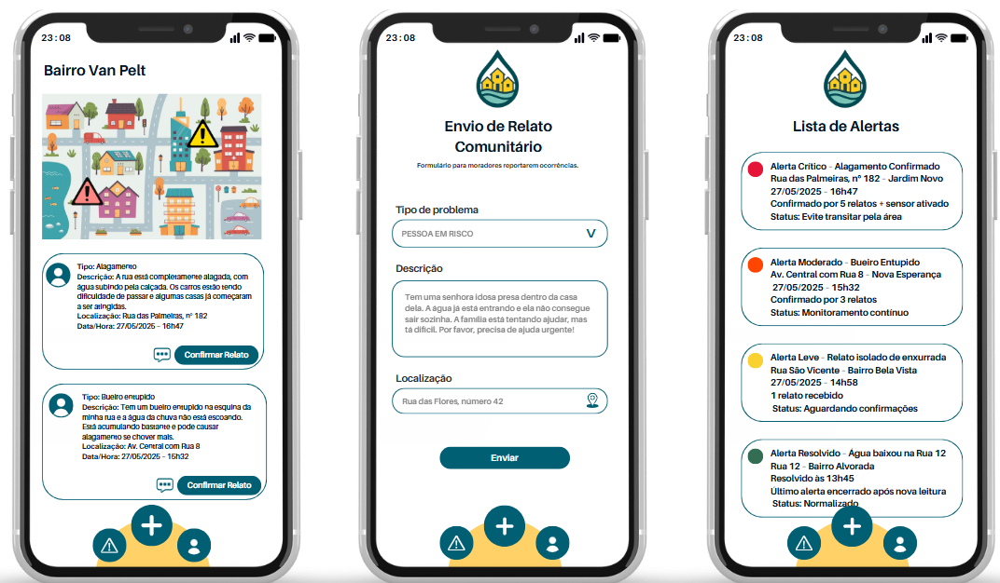

Alerta cidadão
conectado
>>>>>
O Problema
As enchentes afetam comunidades com alagamentos repentinos, gerando riscos à vida e prejuízos materiais.
Faltam alertas eficazes e localizados que ajudem moradores a se protegerem com antecedência e segurança.
Tecnologias
Sensores construídos com Arduino e IoT captam o nível da água em tempo real para monitoramento contínuo.
A aplicação será desenvolvida com HTML, CSS, JavaScript e Python, integrando dados dos sensores aos alertas.
Objetivo
Alertar moradores com rapidez e precisão sobre enchentes iminentes em suas micro-regiões.
Fortalecer o engajamento da comunidade na prevenção e resposta a riscos ambientais.

Público-alvo
Moradores de áreas urbanas vulneráveis a enchentes frequentes e com acesso limitado a alertas oficiais.
Líderes comunitários, voluntários e equipes de defesa civil locais também serão beneficiados.
Benefícios
Alerta antecipado de enchentes reduz perdas materiais e protege vidas.
Interface simples permite participação ativa dos moradores no monitoramento.

Como a solução ajudará no dia a dia do usuário
Moradores recebem alertas visuais e sonoros no celular sempre que há risco próximo.
Podem registrar e confirmar ocorrências, colaborando com o bem-estar coletivo.
